- កំណត់សញ្ញាណទូទៅនៃសូលីតបានច្បាស់លាស់
- រកផ្ទៃក្រឡាខាងនិងផ្ទៃក្រឡាទាំងអស់នៃព្រីស ពីរ៉ាមីត និងកោនបានត្រឹមត្រូវ
- គណនាមាឌព្រីស ពីរ៉ាមីត និងកោនបានត្រឹមត្រូវ ។
1. ផ្ទៃក្រឡាខាងនិងផ្ទៃក្រឡាទាំងអស់នៃព្រីស
ក្នុងមេរៀនទី 15 គេបានសិក្សាផ្ទៃនៃរូបធរណីមាត្រដែលមានវិមាត្រពីរដូចជា ផ្ទៃក្រឡានៃចតុកោណកែង ការេ ... ។ ក្នុងជីវភាពរស់នៅសព្វថ្ងៃគេតែងតែជួបនូវរូបធរណីមាត្រមានវិមាត្របីដែលមានបណ្តោយ ទទឹង និងកម្ពស់ ។
ឧទាហរណ៍ ៖ ប្រអប់កាដូ កាក់ មួកខួបកំណើត... ជាសញ្ញាណនៃសូលីត ។
សូលីតដែលមានមុខច្រើនហៅថា ពហុមុខ ។
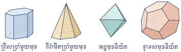
ពហុមុខខាងក្រោមហៅថា ព្រីស ។
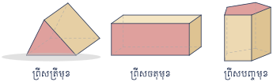
- ព្រីសត្រីមុខ
- ព្រីសចតុមុខ
- ព្រីសបញ្ចមុខ
ព្រីសមានមុខពីរៗស្របគ្នា ហើយប៉ុនគ្នាហៅថា បាតព្រីស ។
ជ្រុងស្របគ្នាដែលភ្ជាប់កំពូលទាំងពីរនៃបាតហៅថា ទ្រនុងខាង ។ មុខនៃព្រីសដែលមិនមែនជាបាតហៅថា មុខខាង ។
មុខខាងទាំងអស់នៃព្រីសជាប្រលេឡូក្រាម ។ គេហៅឈ្មោះព្រីសទៅតាមឈ្មោះនៃពហុកោណបាត ។
ព្រីសត្រង់ជាព្រីសដែលមានទ្រនុងខាងកែងនឹងបាត ។ មុខខាងទាំងអស់នៃព្រីសត្រង់ជាចតុកោណកែង ។
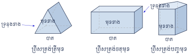
- ព្រីសត្រង់ត្រីមុខ
- ព្រីសត្រង់ចតុមុខ
- ព្រីសត្រង់បញ្ចមុខ
ផ្ទៃក្រឡាខាងព្រីសជាផលបូកនៃផ្ទៃក្រឡាមុខខាងព្រីសទាំងអស់ ។
ផ្ទៃក្រឡាទាំងអស់នៃព្រីស គឺជាផលបូកនៃផ្ទៃក្រឡាមុខខាងព្រីសទាំងអស់និងផ្ទៃក្រឡាបាតទាំងពីរ ។
គេមានព្រីសត្រង់ត្រីមុខដូចរូបខាងស្តាំ ។
- ក. គណនាផ្ទៃក្រឡាខាង
- ខ. គណនាផ្ទៃក្រឡាទាំងអស់ ។
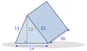
ព្រីសត្រង់ត្រីមុខមានបាតពីរជាត្រីកោណនិងចតុកោណកែងបីជាមុខខាង ៖
- ក.
ផ្ទៃក្រឡាខាង ៖
\[\mathcal{A}_l = 13 \times 20 + 14 \times 20 + 15 \times 20 = 260 + 280 + 300 = 840 \text{ ឯកតាផ្ទៃ ។}\] - ខ.
ផ្ទៃក្រឡាទាំងអស់ ៖
\[\mathcal{A}_t = \mathcal{A}_l + 2B = 840 + 2\left(\frac{12 \times 14}{2}\right) = 1008 \text{ ឯកតាផ្ទៃ ។}\]
គេមានព្រីសត្រង់ចតុមុខដូចរូបខាងស្តាំ ។
- ក. គណនាផ្ទៃក្រឡាខាង
- ខ. គណនាផ្ទៃក្រឡាទាំងអស់ ។
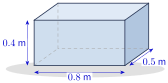
មុខព្រីសត្រង់ចតុមុខទាំង 6 ជាចតុកោណកែងដែលមានមុខឈមគ្នាពីរៗប៉ុនគ្នា ៖
- ក.
ផ្ទៃក្រឡាខាង ៖
\[\mathcal{A}_l = (0.8 \times 0.4) \times 2 + (0.5 \times 0.4) \times 2 = 0.64 + 0.4 = 1.04\text{ m}^2 \text{ ។}\] - ខ.
ផ្ទៃក្រឡាទាំងអស់ ៖
\[\mathcal{A}_t = \mathcal{A}_l + 2B = 1.04 + (0.8 \times 0.5) \times 2 = 1.04 + 0.8 = 1.84\text{ m}^2 \text{ ។}\]
គណនាផ្ទៃក្រឡាខាងនិងផ្ទៃក្រឡាទាំងអស់នៃរូបព្រីសខាងក្រោម៖
- ក. ព្រីសត្រង់ត្រីមុខ (រូបទី 1)
- ខ. ព្រីសត្រង់ចតុមុខ (រូបទី 2) ។
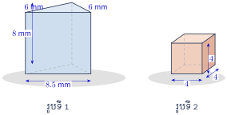
ចម្លើយ ៖
- ក. \(\displaystyle 164\text{ mm}^2\), \(\displaystyle 200\text{ mm}^2\) (ផ្ទៃក្រឡាបាត \(\displaystyle B = \frac{1}{2}\times 6 \times 6 = 18\) នោះ \(\displaystyle \mathcal{A}_t = 164 + 2 \times 18 = 200\))
- ខ. \(\displaystyle 64\), \(\displaystyle 96\) ។
2. ផ្ទៃក្រឡាខាងនិងផ្ទៃក្រឡាទាំងអស់នៃពីរ៉ាមីត
ពីរ៉ាមីតមានបាតតែមួយគត់ ។ ទ្រនុងខាងទាំងអស់មិនស្របគ្នា ហើយប្រសព្វគ្នាត្រង់ចំណុចមួយហៅថា កំពូល ។
មុខខាងទាំងអស់នៃពីរ៉ាមីតជាត្រីកោណ ។ គេហៅឈ្មោះពីរ៉ាមីតទៅតាមឈ្មោះនៃពហុកោណបាត ។
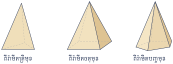
- ពីរ៉ាមីតត្រីមុខ
- ពីរ៉ាមីតចតុមុខ
- ពីរ៉ាមីតបញ្ចមុខ
ពីរ៉ាមីតនិយ័តជាពីរ៉ាមីតដែលមានបាតជាពហុកោណនិយ័តនិងទ្រនុងខាងទាំងអស់ប៉ុនគ្នា ។ ដូច្ចោះមុខខាងទាំងអស់នៃពីរ៉ាមីតនិយ័តជាត្រីកោណសមបាតប៉ុនគ្នា ។
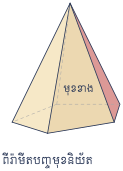
កម្ពស់នៃពីរ៉ាមីតនិយ័តជាអង្កត់កែងដែលគូសពីកំពូលកែងនឹងពហុកោណបាតត្រង់ផ្ចិត ។
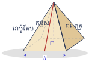
សម្គាល់ ៖ ដើម្បីគណនាជ្រុងនៃត្រីកោណកែង គេប្រើទ្រឹស្តីបទពីតាគ័រ \(\displaystyle c^2 = a^2 + b^2\) ។
គេមានពីរ៉ាមីតចតុមុខនិយ័តដូចរូបខាងស្តាំ ។
- ក. គណនាផ្ទៃក្រឡាខាង
- ខ. គណនាផ្ទៃក្រឡាទាំងអស់ ។
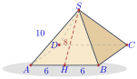
- ក. ផ្ទៃក្រឡាខាងជាផលបូកនៃផ្ទៃក្រឡាត្រីកោណសមបាតប៉ុនគ្នាទាំងអស់ ៖
តាង \(\displaystyle H\) ជាចំណុចកណ្តាលនៃជ្រុង \(\displaystyle AB\)
តាមទ្រឹស្តីបទពីតាគ័រអនុវត្តក្នុងត្រីកោណ គេបាន \(\displaystyle AH^2 + SH^2 = SA^2\)
នោះ \(\displaystyle SH^2 = SA^2 - AH^2 = 10^2 - 6^2 \implies SH = \sqrt{64} = 8\)
ដូច្ចោះផ្ទៃក្រឡាខាង \(\displaystyle \mathcal{A}_l = 4 \times \frac{1}{2} \times (8 \times 12) = 192 \text{ ឯកតាផ្ទៃ ។}\) - ខ. ផ្ទៃក្រឡាទាំងអស់ជាផលបូកនៃផ្ទៃក្រឡាខាងនិងផ្ទៃក្រឡាបាតជាការេ ៖
\(\displaystyle \mathcal{A}_t = \mathcal{A}_l + B = 192 + (12 \times 12) = 192 + 144 = 336 \text{ ឯកតាផ្ទៃ ។}\)
បាតនៃពីរ៉ាមីតចតុមុខ \(\displaystyle ABCDE\) មានរង្វាស់វិមាត្រ \(\displaystyle 10\text{ cm}\) និង \(\displaystyle 18\text{ cm}\) ។ កម្ពស់មានរង្វាស់ \(\displaystyle 12\text{ cm}\) ។ ទ្រនុងខាងទាំងអស់ប៉ុនគ្នា ។
- ក. តើពីរ៉ាមីត \(\displaystyle ABCDE\) ជាពីរ៉ាមីតចតុមុខនិយ័តឬទេ?
- ខ. គណនាផ្ទៃក្រឡាទាំងអស់ ។
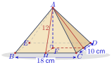
- ក. ពីរ៉ាមីត \(\displaystyle ABCDE\) មិនមែនជាពីរ៉ាមីតចតុមុខនិយ័តទេ ព្រោះបាត \(\displaystyle BCDE\) មិនមែនជាពហុកោណនិយ័ត ។
- ខ. គណនាផ្ទៃក្រឡាទាំងអស់ ៖
ដោយ \(\displaystyle AH\) និង \(\displaystyle AG\) ជាកម្ពស់នៃមុខខាង
តាមទ្រឹស្តីបទពីតាគ័រអនុវត្តក្នុងត្រីកោណ \(\displaystyle AFG\) ៖
\(\displaystyle AF^2 + FG^2 = AG^2 \implies 12^2 + 9^2 = AG^2 \implies AG = \sqrt{225} = 15\)
តាមទ្រឹស្តីបទពីតាគ័រអនុវត្តក្នុងត្រីកោណ \(\displaystyle AFH\) គេបាន ៖
\(\displaystyle AF^2 + FH^2 = AH^2 \implies 12^2 + 5^2 = AH^2 \implies AH = \sqrt{169} = 13\)
មុខទាំង 5 នោះគឺ ៖
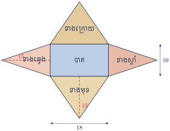
គេបានផ្ទៃក្រឡាទាំងអស់នៃពីរ៉ាមីត \(\displaystyle ABCDE\) ៖
បាតនៃពីរ៉ាមីតចតុមុខជាចតុកោណកែងមានវិមាត្ររង្វាស់ \(\displaystyle 14\text{ cm}\) និង \(\displaystyle 30\text{ cm}\) ។ ទ្រនុងខាងទាំងអស់ប៉ុនគ្នាមានរង្វាស់ \(\displaystyle 25\text{ cm}\) ។
- ក. ហេតុអ្វីបានជាពីរ៉ាមីតនេះមិនមែនជាពីរ៉ាមីតចតុមុខនិយ័ត?
- ខ. គណនាផ្ទៃក្រឡាខាង
- គ. គណនាផ្ទៃក្រឡាទាំងអស់ ។
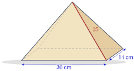
3. ផ្ទៃក្រឡាខាងនិងផ្ទៃក្រឡាទាំងអស់នៃកោន
កោនមានរាងដូចពីរ៉ាមីត ប៉ុន្តែវាមានបាតជាថាស ។ នៅក្នុងពីរ៉ាមីតអាប៉ូតែមនិងជនេត្រមានរង្វាស់មិនស្មើគ្នាទេតែនៅក្នុងកោនវាមានរង្វាស់ដូចគ្នា ។ ក្នុងមេរៀននេះពាក្យថាកោន មានន័យថាកោនបរិវត្ត ជាកោនដែលមានកម្ពស់កាត់តាមផ្ចិតនៃថាសបាត ។
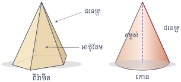
បើគេពន្លាតផ្ទៃខាងកោនតាមជនេត្រមួយ គេបាន ៖
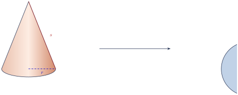
បាតកោនជាថាសកាំ \(\displaystyle r\) មានផ្ទៃក្រឡា \(\displaystyle B = \pi r^2\) និងផ្ទៃក្រឡាខាងជាចម្រៀកថាសដែលគេកាត់វាជាចម្រៀកៗ ហើយផ្គុំជាប្រលេឡូក្រាម ។ បាតនៃប្រលេឡូក្រាមស្មើពាក់កណ្តាលនៃបរិមាត្របាតកោនឬ \(\displaystyle \frac{1}{2} \times 2\pi r = \pi r\) ហើយកម្ពស់ជាជនេត្រនៃកោន \(\displaystyle s\) ។
ដូច្ចោះផ្ទៃក្រឡាខាងកោនគឺ \(\displaystyle \mathcal{A}_l = \pi r s\) ។
ផ្ទៃក្រឡាខាងកោនដែលមានជនេត្រ \(\displaystyle s\) និងកាំបាត \(\displaystyle r\) កំណត់ដោយ \(\displaystyle \mathcal{A}_l = \pi r s\) ។
ផ្ទៃក្រឡាទាំងអស់នៃកោនជាផលបូកនៃផ្ទៃក្រឡាខាងកោននិងផ្ទៃក្រឡាបាតកោន កំណត់ដោយ ៖
គណនាផ្ទៃក្រឡាខាងនិងផ្ទៃក្រឡាទាំងអស់នៃកោន ។ (\(\displaystyle \pi \approx 3.14\))
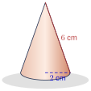
ផ្ទៃក្រឡាខាងកោនដែលមានជនេត្រ \(\displaystyle s = 6\text{ cm}\) និងកាំបាត \(\displaystyle r = 2\text{ cm}\) ៖
ផ្ទៃក្រឡាទាំងអស់នៃកោនជាផលបូកនៃផ្ទៃក្រឡាខាងកោននិងផ្ទៃក្រឡាបាតកោន ៖
គណនាផ្ទៃក្រឡាទាំងអស់នៃសូលីត ។ (\(\displaystyle \pi \approx 3.14\))
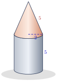
ផ្ទៃក្រឡាទាំងអស់នៃសូលីតចែកជាបីផ្នែក ផ្ទៃក្រឡាបាត ផ្ទៃក្រឡាខាងស៊ីឡាំងនិងផ្ទៃក្រឡាខាងកោន ៖
គណនាផ្ទៃក្រឡាទាំងអស់នៃសូលីតដូចរូបខាងក្រោម ៖ (\(\displaystyle \pi \approx 3.14\))
- ក. រូបទី 1
- ខ. រូបទី 2 ។
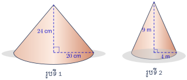
ចម្លើយ ៖
- ក. ជនេត្រ \(\displaystyle s = \sqrt{24^2 + 20^2} = \sqrt{976} \approx 31.24\text{ cm}\) ដូច្នេះ \(\displaystyle \mathcal{A}_t = \pi r (s + r) = 3.14 \times 20 \times (31.24 + 20) \approx 3218\text{ cm}^2\)
- ខ. ជនេត្រ \(\displaystyle s = \sqrt{9^2 + 4^2} = \sqrt{97} \approx 9.85\text{ m}\) ដូច្នេះ \(\displaystyle \mathcal{A}_t = 3.14 \times 4 \times (9.85 + 4) \approx 174\text{ m}^2\) ។
4. ការគណនាមាឌព្រីស
ដើម្បីកំណត់មាឌនៃរូបធរណីមាត្រដែលមានវិមាត្របី គេបំពេញវាដោយឯកតាគូបតូចៗ ដែលជ្រុងមានរង្វាស់ \(\displaystyle 1\text{ mm}\) ឬ \(\displaystyle 1\text{ cm}\) ឬ \(\displaystyle 1\text{ dm}\) ឬ \(\displaystyle 1\text{ m}\) ។ ព្រីសត្រង់ដែលមានបាតជាចតុកោណកែងដែលមានវិមាត្រ \(\displaystyle 2\text{ cm}\), \(\displaystyle 3\text{ cm}\) និង \(\displaystyle 4\text{ cm}\) គេអាចរាប់ចំនួនគូបតូចៗដូចខាងក្រោម ៖
- ស្រទាប់បាតមាន \(\displaystyle 2 \times 4 = 8\) គូប
- ស្រទាប់កណ្តាលមាន \(\displaystyle 2 \times 4 = 8\) គូប
- ស្រទាប់លើមាន \(\displaystyle 2 \times 4 = 8\) គូប
ចំនួនគូបដែលផ្គុំគ្នាបង្កើតជាព្រីសត្រង់មានចំនួន \(\displaystyle 24\) គូប ។ នោះគេអាចគណនាមាឌព្រីសត្រង់ដែលមានបាតជាចតុកោណកែងដែលមានវិមាត្រ \(\displaystyle 2\text{ cm}\), \(\displaystyle 3\text{ cm}\) និង \(\displaystyle 4\text{ cm}\) គឺ \(\displaystyle V = 2 \times 3 \times 4 = 24\text{ cm}^3\) ។
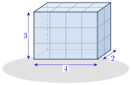
មាឌព្រីសត្រង់ដែលមានបាតជាចតុកោណកែងមានទទឹង \(\displaystyle a\) ឯកតា បណ្តោយ \(\displaystyle b\) ឯកតា និងកម្ពស់ \(\displaystyle h\) ឯកតា កំណត់ដោយរូបមន្ត \(\displaystyle V = a \times b \times h\) ។
សម្គាល់ ៖ ព្រីសទាំងអស់មិនមែនសុទ្ធតែមានបាតជាចតុកោណកែងទេ ។
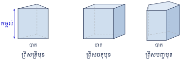
ព្រីសដែលមានផ្ទៃក្រឡាបាត \(\displaystyle B\) ឯកតាផ្ទៃ និងកម្ពស់ \(\displaystyle h\) ឯកតាប្រវែង ត្រូវមានមាឌ \(\displaystyle V\) កំណត់ដោយ \(\displaystyle V = B h\) ឯកតាមាឌ ។
គណនាមាឌព្រីសត្រង់ដែលមានបាតជាចតុកោណកែងដូចរូបខាងស្តាំ ។
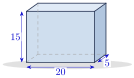
មាឌព្រីសកំណត់ដោយ \(\displaystyle V = lwh\) ឬ \(\displaystyle V = Bh\) ៖
គណនាមាឌព្រីសត្រីមុខដូចរូបខាងស្តាំ ។
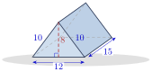
បាតនៃព្រីសជាត្រីកោណ ៖
មាឌព្រីសត្រីមុខ \(\displaystyle V = Bh\) ៖
គណនាមាឌនៃព្រីសដូចរូបខាងក្រោម ៖
- ក. រូប ក
- ខ. រូប ខ ។
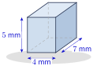
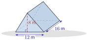
ចម្លើយ ៖
- ក. \(\displaystyle 140\text{ mm}^3\)
- ខ. \(\displaystyle 768\text{ m}^3\) (\(\displaystyle B = \frac{1}{2} \times 12 \times 8 = 48\) នោះ \(\displaystyle V = 48 \times 16 = 768\)) ។
5. ការគណនាមាឌពីរ៉ាមីត
គេធ្វើពិសោធន៍មួយ ដើម្បីរកឱ្យឃើញនូវទំនាក់ទំនងរវាងមាឌពីរ៉ាមីត និងមាឌព្រីសដែលមានលក្ខខណ្ឌដូចខាងក្រោម ៖
- បាតពីរ៉ាមីតនិងបាតព្រីសប៉ុនគ្នា
- កម្ពស់ពីរ៉ាមីតនិងកម្ពស់ព្រីសប៉ុនគ្នា ។
គេឃើញថាមាឌពីរ៉ាមីតតូចជាងមាឌព្រីស ។ ផ្ទេរខ្សាច់ពណ៌ពីពីរ៉ាមីតទៅព្រីស ដើម្បីធ្វើការប្រៀបធៀបមាឌរបស់វា ។ គេឃើញថា មាឌព្រីសត្រូវបានបំពេញដោយមាឌពីរ៉ាមីតបី ។
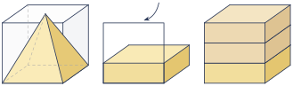
ដូច្ចោះគេបានមាឌពីរ៉ាមីតស្មើមួយភាគបីនៃមាឌព្រីសគឺ \(\displaystyle V = \frac{1}{3} B \cdot h\) ។
ពីរ៉ាមីតដែលមានផ្ទៃក្រឡាបាត \(\displaystyle B\) ឯកតាផ្ទៃ និងកម្ពស់ \(\displaystyle h\) ឯកតា មានមាឌ \(\displaystyle V\) កំណត់ដោយ \(\displaystyle V = \frac{1}{3} B \cdot h\) ឯកតាមាឌ ។
គណនាមាឌពីរ៉ាមីតត្រីមុខដូចរូបខាងស្តាំ ។
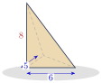
បាតនៃពីរ៉ាមីតជាត្រីកោណកែង គេបានផ្ទៃក្រឡាត្រីកោណ ៖
មាឌពីរ៉ាមីតកំណត់ដោយ ៖
គណនាមាឌពីរ៉ាមីតចតុមុខដូចរូបខាងស្តាំ ។
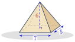
បាតនៃពីរ៉ាមីតជាចតុកោណកែង គេបានផ្ទៃក្រឡាចតុកោណកែង ៖
មាឌពីរ៉ាមីត ៖
គណនាមាឌនៃពីរ៉ាមីតដែលមានបាតជាការេដូចរូបខាងក្រោមនេះ ៖
- ក. រូប ក
- ខ. រូប ខ ។
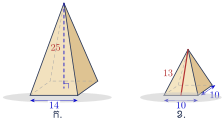
ចម្លើយ ៖
- ក. \(\displaystyle V = \frac{1}{3} \times 14^2 \times 25 = \frac{4900}{3} \approx 1633.3\)
- ខ. អាប៉ូតែម \(\displaystyle 13\) និងពាក់កណ្ដាលជ្រុងបាត \(\displaystyle 5\) នាំឱ្យកម្ពស់ \(\displaystyle h = \sqrt{13^2 - 5^2} = 12\) ដូច្នេះ \(\displaystyle V = \frac{1}{3} \times 10^2 \times 12 = 400\) ។
6. ការគណនាមាឌកោន
តាមរយៈការពិសោធន៍រវាងមាឌពីរ៉ាមីតនិងមាឌព្រីស នាំឱ្យគេគិតឃើញថា មាឌកោននិងមាឌស៊ីឡាំងមានទំនាក់ទំនងដូចគ្នាដែលមានលក្ខខណ្ឌដូចខាងក្រោម ៖
- បាតកោននិងបាតស៊ីឡាំងប៉ុនគ្នា
- កម្ពស់កោននិងកម្ពស់ស៊ីឡាំងប៉ុនគ្នា ។
ដោយប្រើកែវដូចគ្នានេះនិងខ្សាច់ពណ៌ឃើញថា មាឌកោនស្មើមួយភាគបីនៃមាឌស៊ីឡាំង គឺ \(\displaystyle V = \frac{1}{3} B \cdot h\) ។
កោនដែលមានកាំ \(\displaystyle r\) ឯកតា និងកម្ពស់ \(\displaystyle h\) ឯកតា ត្រូវមានមាឌ \(\displaystyle V\) កំណត់ដោយ \(\displaystyle V = \frac{1}{3} \pi r^2 h\) ឯកតាមាឌ ។
គណនាមាឌកោន (យក \(\displaystyle \pi \approx 3.14\)) ដូចរូបខាងស្តាំ ។
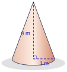
កោនដែលមានកាំ \(\displaystyle r = 3\text{ m}\) និងកម្ពស់ \(\displaystyle h = 8\text{ m}\) នោះ ៖
គណនាមាឌកោន (យក \(\displaystyle \pi \approx 3.14\)) ដូចរូបខាងស្តាំ ។
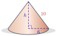
តាមទ្រឹស្តីបទពីតាគ័រ គេបាន \(\displaystyle h^2 + 6^2 = 10^2 \implies h = \sqrt{100 - 36} = 8\) ។
កោនដែលមានកាំ \(\displaystyle r = 6\) និងកម្ពស់ \(\displaystyle h = 8\) មានមាឌ ៖
គណនាមាឌកោន (យក \(\displaystyle \pi \approx 3.14\)) ដូចរូបខាងក្រោមនេះ ៖
- ក. រូប ក
- ខ. រូប ខ ។
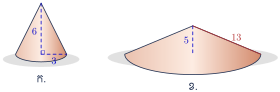
ចម្លើយ ៖
- ក. \(\displaystyle V = \frac{1}{3} \times 3.14 \times 3^2 \times 6 = 56.52\)
- ខ. កាំបាត \(\displaystyle r = \sqrt{13^2 - 5^2} = 12\) ដូច្នេះ \(\displaystyle V = \frac{1}{3} \times 3.14 \times 12^2 \times 5 = 753.6\) ។
លំហាត់
គណនាផ្ទៃក្រឡាសរុបនៃប្រលេពីប៉ែតកែងដែលមានវិមាត្រដូចខាងក្រោម៖
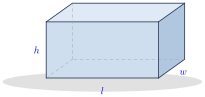
- ក. \(\displaystyle l = 13\text{ cm}\), \(\displaystyle w = 6\text{ cm}\), \(\displaystyle h = 10\text{ cm}\)
- ខ. \(\displaystyle l = 12\text{ mm}\), \(\displaystyle w = 8\text{ mm}\), \(\displaystyle h = 13\text{ mm}\)
- គ. \(\displaystyle l = 8\text{ dm}\), \(\displaystyle w = 11\text{ dm}\), \(\displaystyle h = 19\text{ dm}\) ។
មើលដំណោះស្រាយ
រូបមន្តផ្ទៃក្រឡាសរុបនៃប្រលេពីប៉ែតកែង៖
\[S_T = 2(lw + lh + wh)\]- ក. \(\displaystyle S_T = 2(13 \times 6 + 13 \times 10 + 6 \times 10) = 2(78 + 130 + 60) = 2 \times 268 = 536\text{ cm}^2\)
- ខ. \(\displaystyle S_T = 2(12 \times 8 + 12 \times 13 + 8 \times 13) = 2(96 + 156 + 104) = 2 \times 356 = 712\text{ mm}^2\)
- គ. \(\displaystyle S_T = 2(8 \times 11 + 8 \times 19 + 11 \times 19) = 2(88 + 152 + 209) = 2 \times 449 = 898\text{ dm}^2\)
គណនាផ្ទៃក្រឡាខាងព្រីសត្រង់ត្រីមុខដែលមានវិមាត្រដូចខាងក្រោម៖
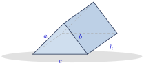
- ក. \(\displaystyle a = 3\text{ cm}\), \(\displaystyle b = 5\text{ cm}\), \(\displaystyle c = 7\text{ cm}\), \(\displaystyle h = 10\text{ cm}\)
- ខ. \(\displaystyle a = 12\text{ mm}\), \(\displaystyle b = 7\text{ mm}\), \(\displaystyle c = 7\text{ mm}\), \(\displaystyle h = 15\text{ mm}\) ។
មើលដំណោះស្រាយ
រូបមន្តផ្ទៃក្រឡាខាងនៃព្រីសត្រង់៖
\[S_L = P_B \times h = (a + b + c) \times h\]- ក. \(\displaystyle S_L = (3 + 5 + 7) \times 10 = 15 \times 10 = 150\text{ cm}^2\)
- ខ. \(\displaystyle S_L = (12 + 7 + 7) \times 15 = 26 \times 15 = 390\text{ mm}^2\)
គេមានព្រីសត្រង់ត្រីមុខដែលមានបាតជាត្រីកោណសមបាត ។
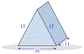
- ក. គណនាផ្ទៃក្រឡាខាងព្រីស
- ខ. គណនាផ្ទៃក្រឡាបាតមួយនៃព្រីស
- គ. គណនាផ្ទៃក្រឡាសរុបនៃព្រីស ។
មើលដំណោះស្រាយ
តាមរូប ជ្រុងបាតត្រីកោណសមបាតមាន \(\displaystyle a = 17, b = 17, c = 16\) និងកម្ពស់ព្រីស \(\displaystyle h = 11\) ៖
- ក.
ផ្ទៃក្រឡាខាងព្រីស ៖
\[S_L = P_B \times h = (17 + 17 + 16) \times 11 = 50 \times 11 = 550\text{ ឯកតាផ្ទៃ}\] - ខ.
ផ្ទៃក្រឡាបាតមួយនៃព្រីស ៖ កម្ពស់នៃត្រីកោណសមបាតបាតទម្លាក់មកលើជ្រុងបាត \(\displaystyle 16\) ៖
\[h_b = \sqrt{17^2 - \left(\frac{16}{2}\right)^2} = \sqrt{289 - 64} = \sqrt{225} = 15\]ផ្ទៃក្រឡាបាតមួយ ៖
\[B = \frac{1}{2} \times 16 \times 15 = 120\text{ ឯកតាផ្ទៃ}\] - គ.
ផ្ទៃក្រឡាសរុបនៃព្រីស ៖
\[S_T = S_L + 2B = 550 + 2(120) = 550 + 240 = 790\text{ ឯកតាផ្ទៃ}\]
សូលីតនៃរូបខាងស្តាំនេះផ្តុំឡើងដោយព្រីសនិងពីរ៉ាមីតនិយ័ត ។
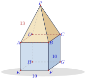
- ក. តើ \(\displaystyle ABCD\) ជាមុខនៃសូលីតនេះឬទេ?
- ខ. តើសូលីតនេះមានមុខចំនួនប៉ុន្មាន?
- គ. គណនាផ្ទៃក្រឡាសរុបនៃសូលីត ។
មើលដំណោះស្រាយ
- ក. \(\displaystyle ABCD\) មិនមែនជាមុខខាងក្រៅនៃសូលីតនេះទេ ព្រោះវាជាផ្ទៃជាប់គ្នាខាងក្នុងរវាងព្រីសនិងពីរ៉ាមីត ។
- ខ. សូលីតនេះមានមុខសរុបចំនួន \(\displaystyle 9\) មុខ (បាតក្រោម \(\displaystyle 1\) + មុខខាងព្រីស \(\displaystyle 4\) + មុខខាងពីរ៉ាមីត \(\displaystyle 4\)) ។
- គ.
គណនាផ្ទៃក្រឡាសរុបនៃសូលីត ៖
- ផ្ទៃបាតក្រោម ៖ \(\displaystyle S_{\text{bot}} = 10 \times 10 = 100\)
- ផ្ទៃមុខខាងព្រីសទាំង 4 ៖ \(\displaystyle S_{L,\text{prism}} = 4 \times (10 \times 10) = 400\)
ផ្ទៃមុខខាងពីរ៉ាមីតទាំង 4 ៖ អាប៉ូតែមនៃមុខត្រីកោណពីរ៉ាមីត ៖
\[a = \sqrt{13^2 - 5^2} = \sqrt{169 - 25} = \sqrt{144} = 12\]ផ្ទៃមុខខាងពីរ៉ាមីតទាំង 4 ៖
\[S_{L,\text{pyr}} = 4 \times \left(\frac{1}{2} \times 10 \times 12\right) = 240\]
ដូចនេះ ផ្ទៃក្រឡាសរុបនៃសូលីតគឺ ៖
\[S_T = 100 + 400 + 240 = 740\text{ ឯកតាផ្ទៃ}\]
គណនាផ្ទៃក្រឡាខាង និងផ្ទៃក្រឡាសរុបនៃព្រីសត្រង់ដូចរូបខាងក្រោម ៖
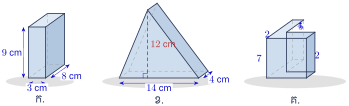
- ក. ព្រីសត្រង់ចតុមុខ
- ខ. ព្រីសត្រង់ត្រីមុខ
- គ. ព្រីសត្រង់រាងអក្សរ L ។
មើលដំណោះស្រាយ
- ក.
បាតជាចតុកោណកែងមានវិមាត្រ \(\displaystyle 3\text{ cm}\) និង \(\displaystyle 8\text{ cm}\) ហើយកម្ពស់ព្រីស \(\displaystyle h = 9\text{ cm}\) ៖
\[P_B = 2(3 + 8) = 22\text{ cm} \implies \mathcal{A}_l = P_B \times h = 22 \times 9 = 198\text{ cm}^2\]\[B = 3 \times 8 = 24\text{ cm}^2 \implies \mathcal{A}_t = 198 + 2 \times 24 = 246\text{ cm}^2\] - ខ.
បាតជាត្រីកោណមានជ្រុង \(\displaystyle 13, 14, 15\text{ cm}\) និងកម្ពស់ \(\displaystyle 12\text{ cm}\) ទៅជ្រុង \(\displaystyle 14\text{ cm}\) ហើយព្រីសមានកម្ពស់ \(\displaystyle 4\text{ cm}\) ៖
\[\mathcal{A}_l = (13 + 14 + 15) \times 4 = 168\text{ cm}^2\]\[B = \frac{1}{2} \times 14 \times 12 = 84\text{ cm}^2 \implies \mathcal{A}_t = 168 + 2 \times 84 = 336\text{ cm}^2\] - គ.
បាតជាពហុកោណរាងអក្សរ \(\displaystyle L\) ដែលមានទទឹងដៃទាំងពីរស្មើ \(\displaystyle 2\) ហើយជ្រុងក្នុងមានរង្វាស់ \(\displaystyle 4\) និង \(\displaystyle 5\) ។ ពហុកោណនេះគឺចតុកោណកែងធំ \(\displaystyle 6 \times 7\) ដកចតុកោណកែង \(\displaystyle 4 \times 5\) ចេញ ។ កម្ពស់ព្រីស \(\displaystyle h = 7\) ៖
\[P_B = 2(6 + 7) = 26 \implies \mathcal{A}_l = 26 \times 7 = 182\]\[B = 6 \times 7 - 4 \times 5 = 22 \implies \mathcal{A}_t = 182 + 2 \times 22 = 226\]
គណនាផ្ទៃក្រឡាខាងនិងផ្ទៃក្រឡាសរុបនៃកោន ។ (យក \(\displaystyle \pi \approx 3.14\))
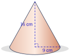
មើលដំណោះស្រាយ
កោនមានកាំបាត \(\displaystyle r = 9\text{ cm}\) និងកម្ពស់ \(\displaystyle h = 16\text{ cm}\) ។ តាមទ្រឹស្តីបទពីតាគ័រ ជនេត្រ ៖
\[s = \sqrt{h^2 + r^2} = \sqrt{16^2 + 9^2} = \sqrt{337} \approx 18.36\text{ cm}\]ផ្ទៃក្រឡាខាង ៖
\[\mathcal{A}_l = \pi r s \approx 3.14 \times 9 \times 18.36 \approx 518.8\text{ cm}^2\]ផ្ទៃក្រឡាសរុប ៖
\[\mathcal{A}_t = \pi r (s + r) \approx 3.14 \times 9 \times (18.36 + 9) \approx 773.1\text{ cm}^2\]
គេផលិតចង្កៀងគោមដោយកាត់កោនតូចដែលមានកាំ \(\displaystyle 7\text{ cm}\) ចេញពីកោនធំដែលមានកាំ \(\displaystyle 21\text{ cm}\) ។ ជនេត្រនៃកោនធំមានរង្វាស់ \(\displaystyle 55\text{ cm}\) និងជនេត្រនៃកោនតូចមានរង្វាស់ \(\displaystyle 10.5\text{ cm}\) ។ គណនាផ្ទៃក្រឡាសរុបនៃចង្កៀងគោម (យក \(\displaystyle \pi = 3.14\)) ។
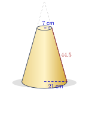
មើលដំណោះស្រាយ
ផ្ទៃនៃចង្កៀងគោមគឺផ្ទៃខាងនៃកោនធំ ដកផ្ទៃខាងនៃកោនតូចដែលត្រូវកាត់ចេញ ៖
\[\mathcal{A}_l = \pi \times 21 \times 55 - \pi \times 7 \times 10.5 = \pi (1155 - 73.5) = 1081.5\pi\]\[\mathcal{A}_l \approx 3.14 \times 1081.5 \approx 3395.91\text{ cm}^2\]បើគេរាប់ទាំងបាតខាងលើនិងបាតខាងក្រោមផង (រង្វង់កាំ \(\displaystyle 7\text{ cm}\) និង \(\displaystyle 21\text{ cm}\)) ៖
\[\mathcal{A}_t = 3395.91 + 3.14 \times 7^2 + 3.14 \times 21^2 = 3395.91 + 153.86 + 1384.74 = 4934.51\text{ cm}^2\]ដូច្នេះ ផ្ទៃក្រឡានៃចង្កៀងគោមគឺ \(\displaystyle 3395.91\text{ cm}^2\) (ឬ \(\displaystyle 4934.51\text{ cm}^2\) បើបិទបាតទាំងពីរ) ។
គណនាមាឌនៃសូលីតខាងក្រោម (យក \(\displaystyle \pi \approx 3.14\)) ៖
- ក.
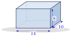
- ខ.
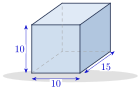
- គ.
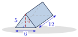
- ឃ.
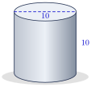
- ង.
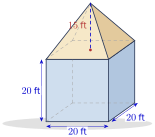
- ច.
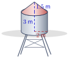
- ឆ.
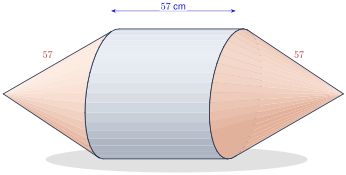
មើលដំណោះស្រាយ
- ក. ប្រលេពីប៉ែតកែង \(\displaystyle 14 \times 10 \times 8\) ៖ \(\displaystyle V = 14 \times 10 \times 8 = 1120\) ឯកតាមាឌ
- ខ. ប្រលេពីប៉ែតកែង \(\displaystyle 10 \times 15 \times 10\) ៖ \(\displaystyle V = 10 \times 15 \times 10 = 1500\) ឯកតាមាឌ
- គ.
ព្រីសត្រីមុខ ៖ បាតជាត្រីកោណសមបាតមានជ្រុង \(\displaystyle 5, 5, 6\) និងកម្ពស់ \(\displaystyle 4\) ហើយព្រីសមានបណ្ដោយ \(\displaystyle 12\) ៖
\[B = \frac{1}{2} \times 6 \times 4 = 12, \quad V = B h = 12 \times 12 = 144\text{ ឯកតាមាឌ}\] - ឃ.
ស៊ីឡាំងមានអង្កត់ផ្ចិត \(\displaystyle 10\) នាំឱ្យ \(\displaystyle r = 5\) និងកម្ពស់ \(\displaystyle h = 10\) ៖
\[V = \pi r^2 h = 3.14 \times 5^2 \times 10 = 785\text{ ឯកតាមាឌ}\] - ង.
គូប \(\displaystyle 20\text{ ft} \times 20\text{ ft} \times 20\text{ ft}\) បន្តុបដោយពីរ៉ាមីតកម្ពស់ \(\displaystyle 15\text{ ft}\) ៖
\[V = 20^3 + \frac{1}{3} \times (20 \times 20) \times 15 = 8000 + 2000 = 10\,000\text{ ft}^3\] - ច.
ស៊ីឡាំងកាំ \(\displaystyle r = 2\text{ m}\) កម្ពស់ \(\displaystyle 3\text{ m}\) និងកោនកម្ពស់ \(\displaystyle 1.5\text{ m}\) ៖
\[V = \pi \times 2^2 \times 3 + \frac{1}{3} \pi \times 2^2 \times 1.5 = 12\pi + 2\pi = 14\pi \approx 43.96\text{ m}^3\] - ឆ.
ស៊ីឡាំងផ្តេកបណ្ដោយ \(\displaystyle 57\text{ cm}\) អង្កត់ផ្ចិត \(\displaystyle 57\text{ cm}\) (\(\displaystyle r = 28.5\)) ភ្ជាប់កោនចុងសងខាងដែលមានជនេត្រ \(\displaystyle 57\text{ cm}\) ។ កម្ពស់កោន ៖
\[h = \sqrt{57^2 - 28.5^2} = \sqrt{2436.75} \approx 49.36\text{ cm}\]\[V_{\text{cyl}} = 3.14 \times 28.5^2 \times 57 \approx 145\,377\text{ cm}^3\]\[V_{\text{cones}} = 2 \times \frac{1}{3} \times 3.14 \times 28.5^2 \times 49.36 \approx 83\,933\text{ cm}^3\]\[V \approx 145\,377 + 83\,933 = 229\,310\text{ cm}^3\]
- ក.
គ្រាប់ប៊ីកែតមួយផលិតឡើងដោយភ្ជាប់កោនដែលមានកម្ពស់ \(\displaystyle 49\text{ cm}\) និងកាំបាតរង្វាស់ \(\displaystyle 18\text{ cm}\) ទៅនិងស៊ីឡាំងដែលមានកម្ពស់ \(\displaystyle 198\text{ cm}\) និងកាំបាតរង្វាស់ \(\displaystyle 18\text{ cm}\) ។ បើគ្រាប់ប៊ីកែតមានម៉ាស \(\displaystyle 2145\text{ g}\) ។ រកម៉ាសមាឌនៃគ្រាប់ប៊ីកែត?
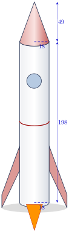
មើលដំណោះស្រាយ
មាឌកោនខាងលើ ៖
\[V_1 = \frac{1}{3} \pi r^2 h_1 = \frac{1}{3} \pi \times 18^2 \times 49 = 5292\pi\text{ cm}^3\]មាឌស៊ីឡាំងខាងក្រោម ៖
\[V_2 = \pi r^2 h_2 = \pi \times 18^2 \times 198 = 64\,152\pi\text{ cm}^3\]មាឌសរុបនៃគ្រាប់ប៊ីកែត ៖
\[V = V_1 + V_2 = 69\,444\pi \approx 69\,444 \times 3.14 = 218\,054.16\text{ cm}^3\]ម៉ាសមាឌនៃគ្រាប់ប៊ីកែត ៖
\[\rho = \frac{m}{V} = \frac{2145\text{ g}}{218\,054.16\text{ cm}^3} \approx 0.00984\text{ g/cm}^3 = 9.84\text{ kg/m}^3\]
គេមានពីរ៉ាមីតចតុមុខដែលមានបាតជាចតុកោណកែងហើយចំណុច \(\displaystyle X\), \(\displaystyle Z\) ជាចំណុចកណ្តាលរៀងនៃជ្រុង \(\displaystyle AB\), \(\displaystyle BC\) រៀងគ្នា ។ \(\displaystyle O\) ជាផ្ចិតនៃបាតពីរ៉ាមីត ។ គណនា
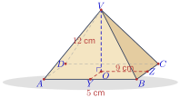
- ក. មាឌពីរ៉ាមីតចតុមុខ
- ខ. ផ្ទៃក្រឡាខាងនៃពីរ៉ាមីតចតុមុខ
- គ. ផ្ទៃក្រឡាសរុបនៃពីរ៉ាមីតចតុមុខ ។
មើលដំណោះស្រាយ
តាមរូបភាព ពីរ៉ាមីត \(\displaystyle V.ABCD\) មានកម្ពស់ \(\displaystyle VO = 12\text{ cm}\) និងចម្ងាយពីផ្ចិតទៅជ្រុងនីមួយៗគឺ \(\displaystyle OY = 5\text{ cm} \implies BC = 10\text{ cm}\) និង \(\displaystyle OZ = 9\text{ cm} \implies AB = 18\text{ cm}\) ៖
- ក.
មាឌពីរ៉ាមីត ៖
\[V = \frac{1}{3} \times (18 \times 10) \times 12 = 60 \times 12 = 720\text{ cm}^3\] - ខ.
ផ្ទៃក្រឡាខាង ៖ អាប៉ូតែមលើជ្រុង \(\displaystyle AB\) ៖ \(\displaystyle VY = \sqrt{12^2 + 5^2} = 13\text{ cm}\)
អាប៉ូតែមលើជ្រុង \(\displaystyle BC\) ៖ \(\displaystyle VZ = \sqrt{12^2 + 9^2} = 15\text{ cm}\)\[S_L = 2 \times \left(\frac{1}{2} \times 18 \times 13\right) + 2 \times \left(\frac{1}{2} \times 10 \times 15\right) = 234 + 150 = 384\text{ cm}^2\] - គ.
ផ្ទៃក្រឡាសរុប ៖
\[S_T = S_L + B = 384 + (18 \times 10) = 384 + 180 = 564\text{ cm}^2\]
មាឌនៃកោនមានរង្វាស់ \(\displaystyle 18\pi\text{ cm}^3\) និងផ្ទៃក្រឡាបាតមានរង្វាស់ \(\displaystyle 6\pi\text{ cm}^2\) ។
- ក. គណនាកម្ពស់នៃកោន
- ខ. គណនាជនេត្រនៃកោន បើផ្ទៃក្រឡាខាងមានរង្វាស់ \(\displaystyle 16\pi\text{ cm}^2\) ។
មើលដំណោះស្រាយ
- ក.
រូបមន្តមាឌកោន \(\displaystyle V = \frac{1}{3} B h\) នាំឱ្យ ៖
\[h = \frac{3V}{B} = \frac{3 \times 18\pi}{6\pi} = 9\text{ cm}\] - ខ. គណនាជនេត្រ ៖ ផ្ទៃបាត \(\displaystyle B = \pi r^2 = 6\pi \implies r = \sqrt{6}\text{ cm}\)
ផ្ទៃខាង \(\displaystyle S_L = \pi r s = 16\pi \implies s = \frac{16}{\sqrt{6}} = \frac{8\sqrt{6}}{3} \approx 6.53\text{ cm}\)
គណនាផ្ទៃក្រឡាសរុបនៃកោន បើផ្ទៃក្រឡាបាតមានរង្វាស់ \(\displaystyle 160\text{ cm}^2\) និងជនេត្រមានរង្វាស់ \(\displaystyle 12\text{ cm}\) ។ (យក \(\displaystyle \pi \approx 3.14\))
មើលដំណោះស្រាយ
ផ្ទៃបាត \(\displaystyle B = \pi r^2 = 160\text{ cm}^2 \implies r = \sqrt{\frac{160}{3.14}} \approx 7.14\text{ cm}\)
ផ្ទៃក្រឡាខាង ៖\[S_L = \pi r s \approx 3.14 \times 7.14 \times 12 \approx 269.03\text{ cm}^2\]ផ្ទៃក្រឡាសរុប ៖
\[S_T = S_L + B \approx 269.03 + 160 = 429.03\text{ cm}^2\]មាឌកោនមានរង្វាស់ \(\displaystyle 420\pi\text{ cm}^3\) និងកម្ពស់មានរង្វាស់ \(\displaystyle 15\text{ cm}\) ។ ផ្ទៃក្រឡាខាងមានរង្វាស់ \(\displaystyle 216\pi\text{ cm}^2\) ។ គណនាផ្ទៃក្រឡាសរុបនៃកោន ។ (យក \(\displaystyle \pi \approx 3.14\))
មើលដំណោះស្រាយ
មាឌកោន \(\displaystyle V = \frac{1}{3} B h \implies B = \frac{3V}{h} = \frac{3 \times 420\pi}{15} = 84\pi\text{ cm}^2\)
ផ្ទៃក្រឡាសរុប ៖\[S_T = S_L + B = 216\pi + 84\pi = 300\pi \approx 300 \times 3.14 = 942\text{ cm}^2\]គណនាមាឌស៊ីម៉ងត៍ដែលគេចាំបាច់ត្រូវចាក់បំពេញជើងទម្រដងទង់សាសនានៅក្នុងវត្តមួយ (ទុកចម្លើយជា \(\displaystyle \pi\)) ។
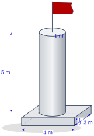
មើលដំណោះស្រាយ
ជើងទម្ររួមមានប្លុកចតុកោណកែងបាត \(\displaystyle 4\text{ m} \times 3\text{ m} \times 0.5\text{ m}\) និងសសរស៊ីឡាំងកាំ \(\displaystyle r = 1\text{ m}\), កម្ពស់ \(\displaystyle h = 5\text{ m}\) ៖
\[V_1 = 4 \times 3 \times 0.5 = 6\text{ m}^3\]\[V_2 = \pi \times 1^2 \times 5 = 5\pi\text{ m}^3\]មាឌស៊ីម៉ងត៍សរុប ៖
\[V = 6 + 5\pi\text{ m}^3\]គេផ្ទេរទឹកពេញពីកែវរាងស៊ីឡាំងទៅជើងរាងប្រលេពីប៉ែតកែងដូចក្នុងរូប ។ តើទឹកក្នុងជើងហៀរចេញឬទេ?
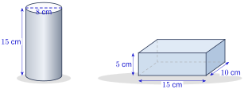
មើលដំណោះស្រាយ
មាឌទឹកក្នុងកែវស៊ីឡាំង (\(\displaystyle d = 8\text{ cm} \implies r = 4\text{ cm}, h = 15\text{ cm}\)) ៖
\[V_{\text{cup}} = \pi r^2 h = \pi \times 4^2 \times 15 = 240\pi \approx 240 \times 3.14 = 753.6\text{ cm}^3\]ចំណុះនៃជើងប្រលេពីប៉ែតកែង (\(\displaystyle 15\text{ cm} \times 10\text{ cm} \times 5\text{ cm}\)) ៖
\[V_{\text{box}} = 15 \times 10 \times 5 = 750\text{ cm}^3\]
ដោយសារ \(\displaystyle V_{\text{cup}} = 753.6\text{ cm}^3 > V_{\text{box}} = 750\text{ cm}^3\) នោះទឹកនឹង ហៀរចេញ ចំនួនប្រមាណ \(\displaystyle 3.6\text{ cm}^3\) ។
គេផលិតកេសដែកមួយដែលមានគម្របរាងជាកន្លះស៊ីឡាំងបន្តុបពីលើប្រលេពីប៉ែតកែងដែលមានវិមាត្រដូចក្នុងរូប ។
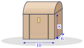
- ក. គណនាមាឌនៃកេសដែកនោះ
- ខ. គណនាផ្ទៃសរុបនៃបន្ទះដែកដែលគេប្រើសម្រាប់ផលិតកេសដែក ។
មើលដំណោះស្រាយ
កេសដែកមានប្រលេពីប៉ែតវិមាត្រ \(\displaystyle 10 \times 6 \times 8\) និងគម្របកន្លះស៊ីឡាំងមានអង្កត់ផ្ចិត \(\displaystyle 6\) (\(\displaystyle r = 3\)) និងបណ្តោយ \(\displaystyle 10\) ៖
- ក.
មាឌកេសដែក ៖
\[V_{\text{prism}} = 10 \times 6 \times 8 = 480\text{ ឯកតាមាឌ}\]\[V_{\text{cyl}} = \frac{1}{2} (\pi r^2 L) = \frac{1}{2} (\pi \times 3^2 \times 10) = 45\pi \approx 141.3\text{ ឯកតាមាឌ}\]\[V = 480 + 141.3 = 621.3\text{ ឯកតាមាឌ}\] - ខ.
ផ្ទៃសរុបនៃបន្ទះដែក ៖ ផ្ទៃប្រលេពីប៉ែត (បាត + មុខខាង 4) ៖
\[S_1 = 10 \times 6 + 2(10 \times 8) + 2(6 \times 8) = 60 + 160 + 96 = 316\text{ ឯកតាផ្ទៃ}\]ផ្ទៃគម្របកន្លះស៊ីឡាំង (ផ្ទៃកោង + កន្លះរង្វង់មុខក្រោយ 2 = រង្វង់ 1) ៖
\[S_2 = \frac{1}{2}(2\pi r L) + \pi r^2 = \pi \times 3 \times 10 + \pi \times 3^2 = 39\pi \approx 122.46\text{ ឯកតាផ្ទៃ}\]ផ្ទៃសរុប ៖
\[S = S_1 + S_2 = 316 + 122.46 = 438.46\text{ ឯកតាផ្ទៃ}\]
គេមានប៉មមួយមានកម្ពស់សរុប \(\displaystyle 24\text{ m}\) ។ កម្ពស់នៃជញ្ជាំងប៉មមានរង្វាស់ \(\displaystyle 20\text{ m}\) ។ បាតនៃប៉មមានរាងជាចតុកោណកែងដែលមានផ្ទៃក្រឡា \(\displaystyle 25\text{ m}^2\) ។ គណនាមាឌសរុបនៃប៉ម ។
មើលដំណោះស្រាយ
ប៉មចែកជាពីរផ្នែក ៖
ជញ្ជាំងរាងព្រីសចតុកោណកែង ៖ កម្ពស់ \(\displaystyle h_1 = 20\text{ m}\), ផ្ទៃបាត \(\displaystyle B = 25\text{ m}^2\)
\[V_1 = B \times h_1 = 25 \times 20 = 500\text{ m}^3\]ដំបូលរាងពីរ៉ាមីត ៖ កម្ពស់ \(\displaystyle h_2 = 24 - 20 = 4\text{ m}\), ផ្ទៃបាត \(\displaystyle B = 25\text{ m}^2\)
\[V_2 = \frac{1}{3} B h_2 = \frac{1}{3} \times 25 \times 4 = \frac{100}{3} \approx 33.33\text{ m}^3\]
មាឌសរុបនៃប៉ម ៖
\[V = V_1 + V_2 = 500 + 33.33 = 533.33\text{ m}^3\]អណ្តូងទឹករាងស៊ីឡាំងមួយមានជម្រៅ \(\displaystyle 50\text{ m}\) និងអង្កត់ផ្ចិត \(\displaystyle 6\text{ m}\) ។ បាតស្រួចនៃអណ្តូងមានរាងជាកោនដែលមានជនេត្ររង្វាស់ \(\displaystyle 5\text{ m}\) ។ គណនាមាឌនៃអណ្តូង ។
មើលដំណោះស្រាយ
កាំអណ្តូង \(\displaystyle r = \frac{6}{2} = 3\text{ m}\) ៖
មាឌផ្នែកស៊ីឡាំង ៖
\[V_1 = \pi r^2 h = \pi \times 3^2 \times 50 = 450\pi\text{ m}^3\]មាឌផ្នែកកោនបាតស្រួច (កម្ពស់កោន \(\displaystyle h_k = \sqrt{5^2 - 3^2} = 4\text{ m}\)) ៖
\[V_2 = \frac{1}{3} \pi r^2 h_k = \frac{1}{3} \pi \times 3^2 \times 4 = 12\pi\text{ m}^3\]
មាឌសរុបនៃអណ្តូង ៖
\[V = V_1 + V_2 = 450\pi + 12\pi = 462\pi \approx 462 \times 3.14 = 1450.68\text{ m}^3\]គណនាមាឌកោនដែលនៅសល់ បើគេដកយកកោនតូចចេញពីកោនធំ ។
មើលដំណោះស្រាយ
តាមរូប កោនធំមានកាំ \(\displaystyle R = 6\) និងកម្ពស់ \(\displaystyle H = 6 + 4 = 10\) ហើយកោនតូចដែលត្រូវកាត់ចេញមានកម្ពស់ \(\displaystyle h = 6\) ។ កោនតូចនិងកោនធំស្រដៀងគ្នា នាំឱ្យ ៖
\[\frac{r}{R} = \frac{h}{H} = \frac{6}{10} \implies r = 6 \times \frac{6}{10} = 3.6\]\[V_{\text{large}} = \frac{1}{3} \pi R^2 H = \frac{1}{3} \pi \times 6^2 \times 10 = 120\pi\]\[V_{\text{small}} = \frac{1}{3} \pi r^2 h = \frac{1}{3} \pi \times 3.6^2 \times 6 = 25.92\pi\]មាឌកោនដែលនៅសល់ ៖
\[V = 120\pi - 25.92\pi = 94.08\pi \approx 94.08 \times 3.14 \approx 295.41\]យានអវកាសមួយមានវិមាត្រដូចរូប ។ បើ 60% នៃយានសម្រាប់ផ្ទុកប្រេង ។ គណនាមាឌប្រេង ។ គណនាមាឌដែលនៅសល់នៅក្នុងយាន ។
មើលដំណោះស្រាយ
កាំយាន \(\displaystyle r = \frac{16}{2} = 8\) ៖
មាឌស៊ីឡាំង (\(\displaystyle L = 50\)) ៖
\[V_1 = \pi r^2 L = \pi \times 8^2 \times 50 = 3200\pi\]មាឌកោនមុខ (\(\displaystyle s = 17 \implies h = \sqrt{17^2 - 8^2} = 15\)) ៖
\[V_2 = \frac{1}{3} \pi r^2 h = \frac{1}{3} \pi \times 8^2 \times 15 = 320\pi\]មាឌសរុប ៖
\[V = 3200\pi + 320\pi = 3520\pi \approx 11\,052.8\text{ ឯកតាមាឌ}\]មាឌប្រេង (60%) ៖
\[V_{\text{fuel}} = 0.6 \times 3520\pi = 2112\pi \approx 6631.68\text{ ឯកតាមាឌ}\]មាឌដែលនៅសល់ (40%) ៖
\[V_{\text{rem}} = 0.4 \times 3520\pi = 1408\pi \approx 4421.12\text{ ឯកតាមាឌ}\]
• បាតនៃពីរ៉ាមីតមានរាងជាការេដែលអង្កត់ទ្រូងមានរង្វាស់ \(\displaystyle 10\text{ dm}\) ។ ទ្រនុងខាងនីមួយៗមានរង្វាស់ \(\displaystyle 13\text{ dm}\) ។ គណនាមាឌនៃពីរ៉ាមីត ។
មើលដំណោះស្រាយ
ចម្ងាយពីផ្ចិតបាតទៅកំពូលបាត ៖ \(\displaystyle r = \frac{10}{2} = 5\text{ dm}\)
កម្ពស់ពីរ៉ាមីត ៖\[h = \sqrt{13^2 - 5^2} = \sqrt{169 - 25} = \sqrt{144} = 12\text{ dm}\]ផ្ទៃបាតការេដែលមានអង្កត់ទ្រូង \(\displaystyle d = 10\text{ dm}\) ៖
\[B = \frac{d^2}{2} = \frac{10^2}{2} = 50\text{ dm}^2\]មាឌពីរ៉ាមីត ៖
\[V = \frac{1}{3} B h = \frac{1}{3} \times 50 \times 12 = 200\text{ dm}^3\]• គូបមួយមានវិមាត្រ \(\displaystyle 7\text{ cm}\) គណនាមាឌគូប ផ្ទៃក្រឡាខាង ផ្ទៃក្រឡាបាត និងផ្ទៃក្រឡាសរុប ។
មើលដំណោះស្រាយ
ជ្រុងគូប \(\displaystyle a = 7\text{ cm}\) ៖
- មាឌគូប ៖ \(\displaystyle V = a^3 = 7^3 = 343\text{ cm}^3\)
- ផ្ទៃក្រឡាខាង ៖ \(\displaystyle S_L = 4a^2 = 4 \times 7^2 = 196\text{ cm}^2\)
- ផ្ទៃក្រឡាបាត ៖ \(\displaystyle S_B = a^2 = 7^2 = 49\text{ cm}^2\)
- ផ្ទៃក្រឡាសរុប ៖ \(\displaystyle S_T = 6a^2 = 6 \times 7^2 = 294\text{ cm}^2\)
• ស៊ីឡាំងមួយមានកាំរស្មី \(\displaystyle 3\text{ cm}\) និងកម្ពស់ \(\displaystyle 15\text{ cm}\) គណនា \(\displaystyle V\), \(\displaystyle S_L\), \(\displaystyle S_B\) និង \(\displaystyle S_T\) ។
មើលដំណោះស្រាយ
ស៊ីឡាំងមាន \(\displaystyle r = 3\text{ cm}, h = 15\text{ cm}\) ៖
- មាឌ ៖ \(\displaystyle V = \pi r^2 h = \pi \times 3^2 \times 15 = 135\pi \approx 423.9\text{ cm}^3\)
- ផ្ទៃក្រឡាខាង ៖ \(\displaystyle S_L = 2\pi r h = 2\pi \times 3 \times 15 = 90\pi \approx 282.6\text{ cm}^2\)
- ផ្ទៃក្រឡាបាតមួយ ៖ \(\displaystyle S_B = \pi r^2 = \pi \times 3^2 = 9\pi \approx 28.26\text{ cm}^2\)
- ផ្ទៃក្រឡាសរុប ៖ \(\displaystyle S_T = S_L + 2S_B = 90\pi + 18\pi = 108\pi \approx 339.12\text{ cm}^2\)
• គណនាមាឌកោនដែលមានផ្ទៃពណ៌ ។
មើលដំណោះស្រាយ
តាមរូបភាព ផ្ទៃពណ៌ជាកោនកាត់ដែលបានមកពីកោនធំ (\(\displaystyle H = 40\text{ m}, R = \frac{12}{2} = 6\text{ m}\)) ដកកោនតូចខាងលើ (\(\displaystyle r = \frac{6}{2} = 3\text{ m}\)) ៖ ផលធៀបកាំ \(\displaystyle \frac{r}{R} = \frac{3}{6} = \frac{1}{2}\) នាំឱ្យកម្ពស់កោនតូច \(\displaystyle h = \frac{1}{2} H = 20\text{ m}\) ៖
\[V_{\text{large}} = \frac{1}{3} \pi R^2 H = \frac{1}{3} \pi \times 6^2 \times 40 = 480\pi\text{ m}^3\]\[V_{\text{small}} = \frac{1}{3} \pi r^2 h = \frac{1}{3} \pi \times 3^2 \times 20 = 60\pi\text{ m}^3\]មាឌនៃកោនកាត់ពណ៌ ៖
\[V = V_{\text{large}} - V_{\text{small}} = 480\pi - 60\pi = 420\pi \approx 420 \times 3.14 = 1318.8\text{ m}^3\]• ដ្យាក្រាមខាងស្តាំបង្ហាញពីត្បូងមួយដែលមានពីរ៉ាមីតត្រង់មានបាតជាការេនៅចុងបាតទាំងពីរនៃព្រីសមួយ ។ បើ \(\displaystyle AB = BC = 16\text{ cm}\), \(\displaystyle AE = 24\text{ cm}\) និង \(\displaystyle VW = 54\text{ cm}\) ។ ចូររក
- ក. មាឌរបស់វា
- ខ. ផ្ទៃក្រឡាខាងសរុប ។
មើលដំណោះស្រាយ
ត្បូងមានកម្ពស់ព្រីសកណ្តាល \(\displaystyle AE = 24\text{ cm}\) និងកម្ពស់សរុប \(\displaystyle VW = 54\text{ cm}\) នាំឱ្យកម្ពស់ពីរ៉ាមីតនីមួយៗគឺ \(\displaystyle h_p = \frac{54 - 24}{2} = 15\text{ cm}\) ៖
- ក.
មាឌត្បូងសរុប ៖
\[V_{\text{prism}} = 16 \times 16 \times 24 = 6144\text{ cm}^3\]\[V_{\text{pyramids}} = 2 \times \left(\frac{1}{3} \times 16^2 \times 15\right) = 2 \times 1280 = 2560\text{ cm}^3\]\[V = 6144 + 2560 = 8704\text{ cm}^3\] - ខ.
ផ្ទៃក្រឡាខាងសរុប ៖ អាប៉ូតែមនៃមុខពីរ៉ាមីត ៖
\[a = \sqrt{15^2 + \left(\frac{16}{2}\right)^2} = \sqrt{225 + 64} = \sqrt{289} = 17\text{ cm}\]ផ្ទៃមុខខាងព្រីសកណ្តាល ៖
\[S_{L,\text{prism}} = 4 \times 16 \times 24 = 1536\text{ cm}^2\]ផ្ទៃមុខខាងពីរ៉ាមីតទាំងពីរ ៖
\[S_{L,\text{pyr}} = 2 \times \left(4 \times \frac{1}{2} \times 16 \times 17\right) = 2 \times 544 = 1088\text{ cm}^2\]ផ្ទៃក្រឡាខាងសរុប ៖
\[S = 1536 + 1088 = 2624\text{ cm}^2\]
ខ្លឹមសារ៖ សៀវភៅពុម្ពគណិតវិទ្យាថ្នាក់ទី៨ របស់ក្រសួងអប់រំ យុវជន និងកីឡា · វាយអត្ថបទ គូររូបភាពឡើងវិញ និងរៀបចំលើអនឡាញដោយលោកគ្រូ សាន សុខលី សម្រាប់ការសិក្សាដោយឥតគិតថ្លៃ និងមិនរកប្រាក់ចំណេញ។ មិនមែនជាការបោះពុម្ពផ្លូវការរបស់ក្រសួងទេ។